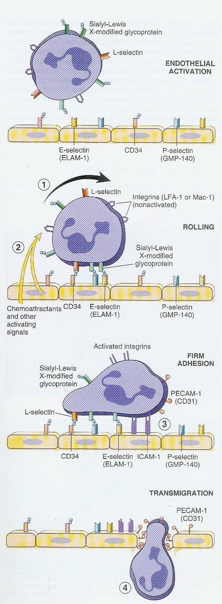

The Cellular Phase and Its Moleculesفاز سلولی و مولکولهای آن
A leaking vessel only delivers plasma. Getting a neutrophil out of the blood
and onto a bacterium takes a four-step cascade of adhesion molecules, a chemical compass, and then
a killing machine, all run by a short list of named receptors and mediators that examiners test
individually.عروق نشتکننده تنها پلاسما را میرساند. بیرونکشیدن یک نوتروفیل از خون و رساندنش به یک باکتری نیازمند آبشاری چهارمرحلهای از مولکولهای چسبندگی، یک قطبنمای شیمیایی، و سپس یک ماشین کشندگی است؛ همه با فهرست کوتاهی از گیرندهها و میانجیهای نامدار که ممتحنان تکتک آنها را میآزمایند.
In this partدر این بخش
Margination, rolling, adhesion, and transmigration, and the named molecule at each stepمارژیناسیون، غلتیدن، چسبندگی، و ترامهاجرت، و مولکول نامدار در هر مرحله
Chemotaxis: how a leukocyte reads a chemical gradient and moves along itکموتاکسی: چگونگی خواندن یک گرادیان شیمیایی توسط لکوسیت و حرکت در امتداد آن
Phagocytosis and killing, oxygen-dependent and oxygen-independentفاگوسیتوز و کشتن، وابسته و مستقل از اکسیژن
Which leukocyte dominates at which stage, and the macrophage's disguisesکدام لکوسیت در کدام مرحله غالب است، و ظاهرهای گوناگون ماکروفاژ
Cell-derived and plasma-derived chemical mediatorsمیانجیهای شیمیایی با منشأ سلولی و پلاسمایی
Inflammatory infiltration is the process by which leukocytes traverse
the vessel wall and enter the interstitial space to carry out phagocytosis during inflammation. Once
emigrated, these cells are called inflammatory cells.نفوذ التهابی فرایندی است که طی آن لکوسیتها از دیوارهٔ عروقی عبور میکنند و برای انجام فاگوسیتوز در طول التهاب وارد فضای بینابینی میشوند. سلولهای مهاجرتکرده، سلولهای التهابی نامیده میشوند.
Fig. 4 · The cast of this part. Everything this cellular
phase adds sits inside the same vessel wall shown in Part One: leukocytes and plasma proteins that
cross it, and the cells and matrix that receive them on the other side.بازیگران این بخش. هرچه این فاز سلولی اضافه میکند درون همان دیوارهٔ عروقی نشاندادهشده در بخش نخست جای میگیرد: لکوسیتها و پروتئینهای پلاسمایی که از آن عبور میکنند، و سلولها و ماتریکسی که آنها را در آنسو میپذیرند.
Four named steps carry a leukocyte from the axial stream of flowing blood to the site of injury,
followed by chemotaxis to steer it and phagocytosis to let it act. Each step is executed by its own
set of adhesion molecules, and each set is upregulated only when the step before it has happened,
which is why the sequence is obligatory and cannot skip ahead.چهار مرحلهٔ نامدار یک لکوسیت را از جریان محوری خون در گردش به محل آسیب میرسانند، و بهدنبال آن کموتاکسی برای هدایت و فاگوسیتوز برای عملکرد آن میآید. هر مرحله توسط مجموعهٔ ویژهٔ خود از مولکولهای چسبندگی اجرا میشود، و هر مجموعه تنها زمانی بالا میرود که مرحلهٔ پیش از آن رخ داده باشد؛ به همین دلیل این توالی الزامی است و نمیتواند از مرحلهای پرش کند.
(a) Margination and pavement(الف) مارژیناسیون و سنگفرششدن
As stasis slows flow, red cells aggregate into larger masses (rouleaux) that push leukocytes out
of the fast-moving central (axial) stream and toward the vessel wall. Leukocytes then tumble along the
endothelial surface and line up against it, a process the lecture calls pavementing: the wall
looks paved with white cells under the microscope.با کندشدن جریان در استاز، گلبولهای قرمز به تودهٔ بزرگتری (روله فرمیشن) کپه میشوند که لکوسیتها را از جریان مرکزی (محوری) تندرو بیرون رانده و بهسوی دیوارهٔ عروقی میراند. سپس لکوسیتها روی سطح اندوتلیال میغلتند و در امتداد آن ردیف میشوند؛ فرایندی که درسگفتار آن را سنگفرششدن مینامد: زیر میکروسکوپ دیواره گویی با گلبولهای سفید سنگفرش شده است.
(b) Rolling and firm adhesion(ب) غلتیدن و چسبندگی محکم

Fig. 5 · The adhesion cascade. Selectins make the leukocyte
roll instead of flow past; endothelium-displayed chemokines then activate the leukocyte's integrins,
which bind Ig-superfamily ligands and arrest it; PECAM-1 finally guides it, homophilically, through
the endothelial junction and its basement membrane.آبشار چسبندگی. سلکتینها باعث میشوند لکوسیت بهجای عبور، بغلتد؛ سپس کموکاینهای نمایشدادهشده روی اندوتلیوم اینتگرینهای لکوسیت را فعال میکنند، که به لیگاندهای اَبَرخانوادهٔ ایمونوگلوبولین متصل شده و آن را متوقف میکنند؛ سرانجام PECAM-1 آن را بهشکل هوموفیلیک از میان اتصال اندوتلیالی و غشای پایهاش عبور میدهد.
Table · Molecule master listجدول · فهرست اصلی مولکولها
Family
On the leukocyte / endothelium
Selectinsسلکتینها
L-selectin (leukocyte); E-selectin/ELAM-1 and P-selectin/GMP-140 (endothelium), binding sialyl-Lewis Xال-سلکتین (لکوسیت)؛ ای-سلکتین/ELAM-1 و پی-سلکتین/GMP-140 (اندوتلیوم)، متصل به سیالیل-لوئیس X
Integrinsاینتگرینها
LFA-1, Mac-1 on the leukocyte, activated by chemokines, binding ICAM-1/VCAM-1 on endotheliumLFA-1، Mac-1 روی لکوسیت، فعالشده توسط کموکاینها، متصل به ICAM-1/VCAM-1 روی اندوتلیوم
Ig-superfamilyاَبَرخانوادهٔ ایمونوگلوبولین
ICAM-1, VCAM-1 (integrin ligands); PECAM-1/CD31 drives transmigration itselfICAM-1، VCAM-1 (لیگاندهای اینتگرین)؛ PECAM-1/CD31 خودِ ترامهاجرت را هدایت میکند
Chemokinesکموکاینها
Displayed on the endothelial surface, convert rolling into firm adhesionروی سطح اندوتلیال نمایش داده میشوند، غلتیدن را به چسبندگی محکم تبدیل میکنند
Why the sequence cannot skip a stepچرا این توالی نمیتواند مرحلهای را جا بیندازد
Selectins bind weakly and reversibly to their carbohydrate ligand, so the leukocyte only slows
and rolls; it cannot yet stop.rolling samples the endothelium long enough for chemokine signalling to occur.غلتیدن بهاندازهٔ کافی طولانی است تا سیگنالدهی کموکاینی رخ دهد.سلکتینها بهطور ضعیف و برگشتپذیر به لیگاند قندی خود متصل میشوند، پس لکوسیت فقط کند میشود و میغلتد؛ هنوز نمیتواند بایستد.
Chemokines held on the endothelial surface trigger a G-protein-coupled signal inside the rolling
leukocyte that switches its integrins from low- to high-affinity.integrins are
present at baseline but non-adhesive until activated; this is the rate-limiting checkpoint of the
whole cascade.اینتگرینها از ابتدا حضور دارند اما تا فعالنشدن غیرچسبندهاند؛ این نقطهٔ کنترل محدودکنندهٔ سرعت کل آبشار است.کموکاینهای نگهداشتهشده روی سطح اندوتلیال، سیگنال جفتشده با پروتئین G را در درون لکوسیتِ در حال غلتیدن راه میاندازند که اینتگرینهای آن را از میل ترکیبی پایین به بالا سوئیچ میکند.
High-affinity integrins bind ICAM-1/VCAM-1 tightly: the leukocyte arrests completely (firm
adhesion).اینتگرینهای با میل ترکیبی بالا محکم به ICAM-1/VCAM-1 متصل میشوند: لکوسیت کاملاً میایستد (چسبندگی محکم).
PECAM-1 on the leukocyte binds PECAM-1 on the endothelial junction (homophilic binding) and pulls
the cell through; collagenases then let it cross the basement membrane.PECAM-1 روی لکوسیت به PECAM-1 روی اتصال اندوتلیالی متصل میشود (اتصال هوموفیلیک) و سلول را از آن عبور میدهد؛ سپس کلاژنازها اجازهٔ عبور از غشای پایه را میدهند.
a leukocyte physically inside the tissue, still needing a compass to find the injury.لکوسیتی که اکنون فیزیکی درون بافت است، اما هنوز به یک قطبنما برای یافتن محل آسیب نیاز دارد.
Exam trap: name the deficiencyتلهٔ امتحانی: نامگذاری نقص
Leukocyte adhesion deficiency type 1 (LAD-1) is a defect in the integrin β2 subunit (CD18, shared
by LFA-1 and Mac-1): leukocytes roll normally but never arrest, so patients get recurrent bacterial
infections with delayed wound healing and, oddly, very little visible pus.نقص چسبندگی لکوسیتی نوع ۱ (LAD-1) نقصی در زیرواحد بتا-۲ اینتگرین (CD18، مشترک بین LFA-1 و Mac-1) است: لکوسیتها بهطور طبیعی میغلتند اما هرگز نمیایستند، پس بیماران دچار عفونتهای باکتریایی راجعه با ترمیم زخم تأخیری و، بهطرزی عجیب، چرک بسیار اندک میشوند.
(c) Chemotaxis and transmigration(ج) کموتاکسی و ترامهاجرت
Definitionتعریف
Chemotaxis is the emigration of a leukocyte toward the site of a
chemical stimulus; a chemotactic agent is any chemical substance that can
induce that emigration.کموتاکسی مهاجرت لکوسیت بهسمت محل یک محرک شیمیایی است؛ یک عامل کموتاکتیک هر مادهٔ شیمیایی است که بتواند این مهاجرت را القا کند.
Complement component C5a; leukotriene B4 (LTB4); IL-8 and other chemokinesجزء کمپلمان C5a؛ لکوترین B4 (LTB4)؛ IL-8 و دیگر کموکاینها
All of these bind specific seven-transmembrane, G-protein-coupled receptors on the leukocyte
surface, triggering an intracellular cascade of phospholipid metabolism that culminates in a rise in
intracellular calcium. That calcium rise assembles the cytoskeletal contractile elements (actin,
myosin) the cell needs to extend a pseudopod and crawl up the gradient.همهٔ اینها به گیرندههای اختصاصی هفتبار عبورکننده از غشا و جفتشده با پروتئین G روی سطح لکوسیت متصل میشوند و آبشاری درونسلولی از متابولیسم فسفولیپید را راه میاندازند که به افزایش کلسیم درونسلولی میانجامد. این افزایش کلسیم عناصر انقباضی اسکلت سلولی (اکتین، میوزین) را که سلول برای بیرونکشیدن یک کاذبپا و خزیدن در امتداد گرادیان نیاز دارد، مونتاژ میکند.
Chemotactic signal transduction, in orderانتقال سیگنال کموتاکتیک، بهترتیب
Chemoattractant binds its receptor; an inactive G-protein is switched on.عامل کموجذبکننده به گیرندهٔ خود متصل میشود؛ یک پروتئین G غیرفعال روشن میشود.
Active phospholipase C splits membrane PIP2 into diacylglycerol (DAG) and inositol
trisphosphate (IP3).فسفولیپاز C فعال، PIP2 غشایی را به دیآسیلگلیسرول (DAG) و اینوزیتول تریفسفات (IP3) میشکند.
IP3 releases calcium from the endoplasmic reticulum; DAG activates protein kinase C.IP3 کلسیم را از شبکهٔ آندوپلاسمی آزاد میکند؛ DAG پروتئین کیناز C را فعال میکند.
Rising calcium and protein kinase C together assemble actin/myosin filaments (motility,
pseudopod formation), increase the number and affinity of adhesion molecules, and trigger the
oxidative burst and granule secretion.the same calcium signal that lets the cell
move is what arms it to kill once it arrives.همان سیگنال کلسیمی که به سلول اجازهٔ حرکت میدهد، آن را برای کشتن پس از رسیدن نیز مسلح میکند.افزایش کلسیم و پروتئین کیناز C با هم رشتههای اکتین/میوزین (حرکت، شکلگیری کاذبپا) را مونتاژ میکنند، تعداد و میل ترکیبی مولکولهای چسبندگی را افزایش میدهند، و انفجار اکسیداتیو و ترشح گرانول را راه میاندازند.
one signal (a calcium rise) both steers the cell and arms its killing machinery.یک سیگنال (افزایش کلسیم) هم سلول را هدایت میکند و هم ماشین کشندگی آن را مسلح میسازد.